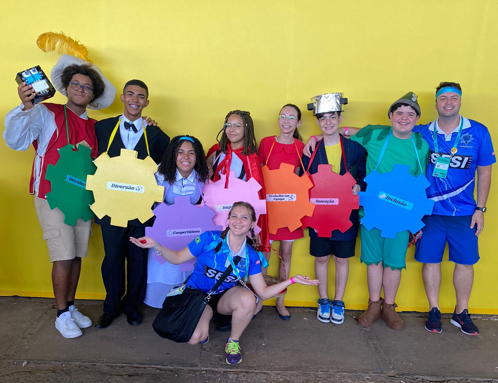

Nossa Equipe
Os Thunderbóticos é uma equipe de robótica educacional formada por alunos do SESI de Rio Claro (SP), com atuação destacada na competição internacional FIRST LEGO League (FLL).
Atuando na FLL desde 2011, com mais de 10 temporadas de experiência, a equipe se destaca pela inovação, trabalho em equipe e paixão por tecnologia, acumulando conquistas expressivas em torneios regionais, nacionais e internacionais — incluindo o vice-campeonato mundial em Houston (EUA) e o título nacional em Curitiba.
Mais do que construir robôs, os Thunderbóticos buscam soluções criativas para problemas do mundo real, promovendo a aprendizagem prática em ciência, engenharia e valores humanos como cooperação, respeito e inclusão.